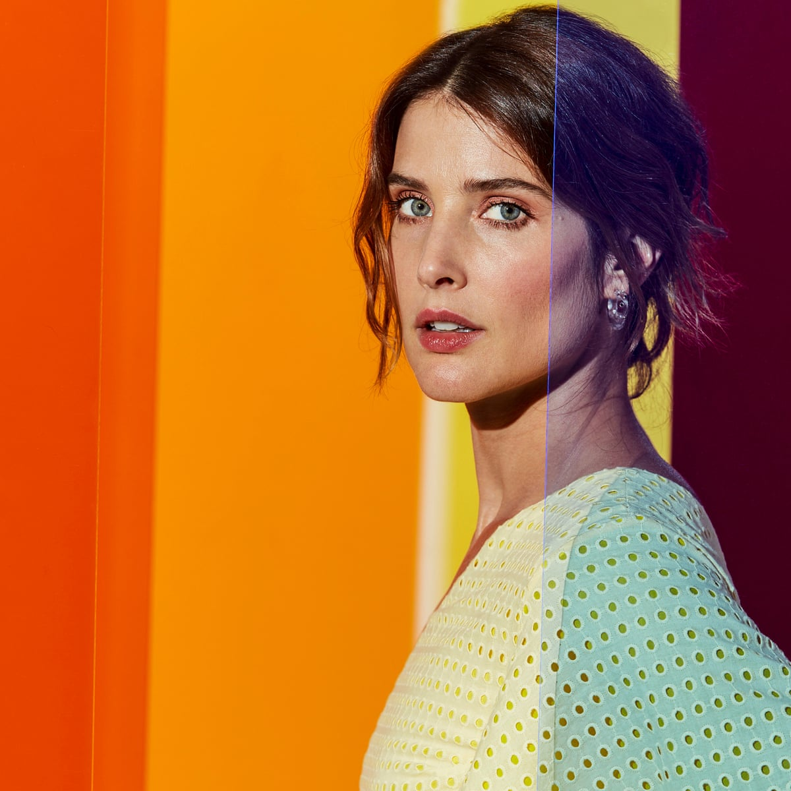

Natasha Ngan (born 1990) is an English writer of sci-fi and
fantasy young adult fiction, best known for her New York Times bestselling young adult fantasy series
Girls of Paper and Fire.
Dua Lipa is an English singer, songwriter, and model.
Her self-titled debut studio album was released on 2 June 2017. The album spawned seven singles,
including two UK top-10 singles Be the One and Idgaf and the UK number-one single New Rules.
In 2018, Lipa won two Brit Awards for British Female Solo Artist and British Breakthrough Act.
Lee Min-ho is a South Korean actor, singer, and model. He
gained widespread fame in Korea and parts of Asia with his role as Gu Jun-pyo in Boys Over Flowers
which also earned him the Best New Actor award. His notable lead roles in television series include
Personal Taste, City Hunter, The Heirs, Legend of the Blue Sea and The King: Eternal Monarch.
Alexandra Anna Daddario is an American actress. She had her
breakthrough portraying Annabeth Chase in the Percy Jackson film series. She has since starred as
Paige in Hall Pass, Heather Miller in Texas Chainsaw, Blake Gaines in San Andreas, Summer Quinn in
Baywatch and Alexis Butler in We Summon the Darkness.

Barack Hussein Obama II is an American politician and attorney
who served as the 44th president of the United States from 2009 to 2017. A member of the Democratic
Party, Obama was the first African-American president of the United States. He previously served as a
U.S. senator from Illinois from 2005 to 2008 and as an Illinois state senator from 1997 to 2004.
Kim Ji-soo, better known mononymously as Jisoo, is a South
Korean singer and actress. She made her debut in August 2016 as a member of the girl group Blackpink
under YG Entertainment.
Kim Tae-hyung, better known by his stage name V, is a South
Korean singer-songwriter, composer, producer and actor. He is one of the vocalists, lead dancers and
visuals of BTS. As a solo artist, he has released three self-produced songs: Scenery, Winter Bear
and Sweet Night.

Jacoba Francisca Maria Smulders is a Canadian actress. She is
best known for her starring role as Robin Scherbatsky in the CBS sitcom How I Met Your Mother and as
S.H.I.E.L.D. agent Maria Hill in the Marvel Cinematic Universe superhero films The Avengers,
Captain America: The Winter Soldier, Avengers: Age of Ultron, Avengers: Infinity War,
Avengers: Endgame, and Spider-Man: Far From Home.
Sarah Janet Maas is an American fantasy author, best known
for her debut series Throne of Glass published in 2012 and A Court of Thorns and Roses series,
published in 2015. Her newest work is the Crescent City series.